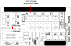
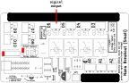
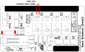
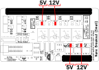

The Small Arduino Nano Breakout Board can be configured for many different input and output options. Here is a quick guide for selecting the headers for each option.
Connect the "Direct Output" jumper only. This will connect the center pin of the terminal block header to the arduino pin.
No jumpers required
Connect the "Direct Output" and "Set pin as output" jumpers. This will connect the center pin of the terminal block header to the arduino pin and bypass the input protection.
Connect the "Set pin as output" jumper. This will bypass the input protection.
Connect the "Relay Output" and "Set pin as output" jumpers. When the corresponding output is HIGH, the PWR and SIG contacts are connected.
For any of the above configurations, a power supply to the PWR pin may be selected. Pick one of 12V or 5V.
For use with a relay configuration, the NC relay contact may be connected to GND. This will connect SIG to GND when the relay is off.